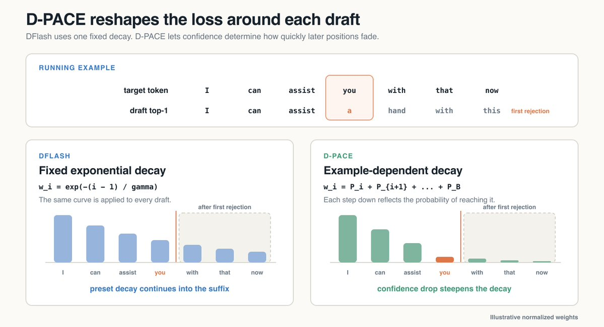
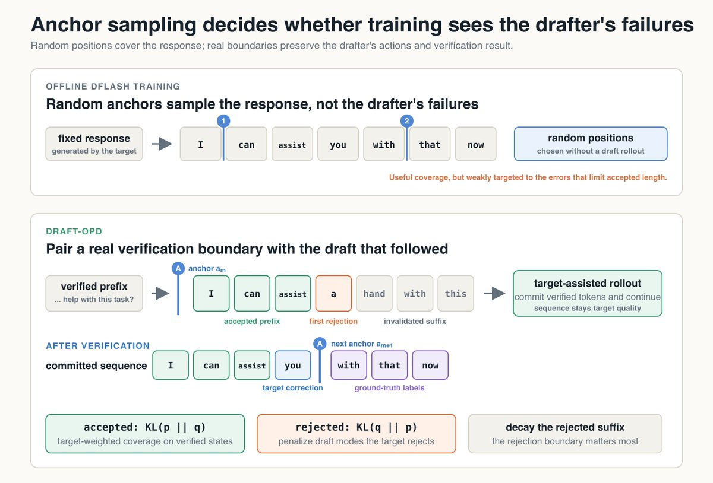
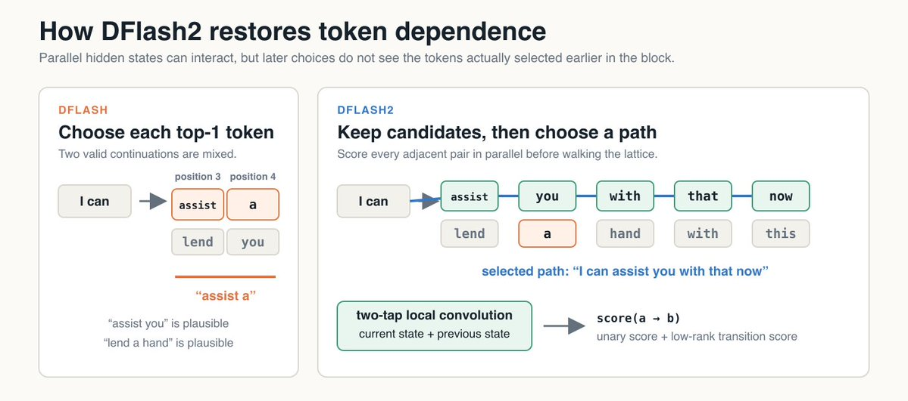

三周前DFlash2刷新了投机解码的最好成绩。作者先在最延迟敏感的部署里把它的机制逆出来，再把训练配方往前推了一步。
两处训练改动把草稿的平均接受长度从3.591拉到4.887、端到端加速从2.514× 拉到3.341×。两个改动的思路一致：围绕「草稿在哪一步不再被接受」来组织训练。
投机解码把一个小而快的草稿模型与目标模型配成一对：草稿先提出未来若干个token，目标一次性给整个提案打分，接受其中最长的有效前缀，在第一个被拒绝的位置采样一个替换token，然后开始起草下一轮。
看一个很能说明问题的例子：
context "Could you help with this task?"
plausible A I can assist you with that now
plausible B I can lend a hand with this
proposal I can assist a hand with this
target I can assist you with that now
verification ✓ ✓ ✓ ✗ · · ·在这个例子里目标接受了前3个token。只要「起草加验证」合计比目标自己生成这几个token更快，我们就省下了延迟。

注意这个例子里的草稿把两条各自都合理的续写拼接在了一起。下面会说明并行起草为什么会造成这种失败，以及DFlash2是如何避免它的。
早期的投机解码草稿模型是自回归地构造提案的：目标固然可以并行验证一整块，但草稿必须先逐个生成每个提议token。
DFlash去掉了这个内循环，改用稍深一些的块扩散（block-diffusion）模型一次性预测整块草稿。打破自回归链让起草快得多，但也可能让模型把不同的合理序列交织在一起，就像上面的例子那样。
因为DFlash并行地选择每一个位置，每个top-1 token在选出时并不知道草稿里更早的位置选了什么。这正是「assist」和「a」各自在自己的位置上看起来都合理、合在一起却成了错误续写的原因。
正确的token往往仍然留在DFlash排名较高的备选里：在上面的例子里，即使「a」在那个位置拿下了top-1，「you」的分数可能也不错。DFlash2的做法是在每个位置保留多个候选，并加一个候选选择器，为相邻选择之间的契合程度打分。

选择器对每一对相邻候选这样打分：Sₜ(a,b) = Uₜ(b) + ⟨A(a) ⊙ H(hₜ), B(b)⟩，其中a是前一个候选、b是当前候选，Uₜ(b) 是b的原始DFlash分数，第二项则在当前上下文里评估两者之间的转移。这让选择器能抬高「assist → you」的分数、压低「assist → a」的分数。所有相邻对都并行打分，然后在这些分数上做一次短走查，选出穿过候选格（candidate lattice）的最终路径。
DFlash2还在每个注意力和前馈层周围加了一个两抽头的动态深度卷积：Conv(x)ₜ = k(t,0) ⊙ xₜ + k(t,1) ⊙ x(t−1)，也就是把每个位置的隐状态与前一个位置的隐状态混合。候选选择器改善最终的token选择，而卷积帮助主干在这些选择做出之前就表示好局部依赖。
DFlash给每个位置从同一条指数衰减曲线分配权重。越靠前的位置权重越大，因为一个早期错误会作废更多的后缀，但这条曲线无法对当前这份草稿作出反应：无论前三个token几乎板上钉钉，还是这份提案本来就不太可能活到那里，第四个位置拿到的权重都是一样的。
D-PACE用从「可微的接受长度代理」导出的权重替换掉这条静态曲线。设qᵢ 是草稿在位置i上给目标token的概率，这个代理就是S = Σ(m=1..B) Π(i=1..m) qᵢ = q₁ + q₁q₂ + q₁q₂q₃ + … + q₁q₂…q_B。每个乘积估计的是草稿能活过该位置的概率；对这个代理求导，就能给每个token记上与「依赖它的后续位置」相应的功劳。D-PACE还会把权重里的置信度做平滑，避免某一个困难token把后面所有梯度抹掉。把平滑后的置信度记作q̃，先计算Pₘ = Π(i=1..m) q̃ᵢ。
位置j的权重就是这个和：wⱼ = Σ(m=j..B) Pₘ = Pⱼ + P(j+1) + … + P_B。这个权重乘在位置j上标准的token级交叉熵损失上。
权重在整块内仍然递减，因为wⱼ − w(j+1) = Pⱼ，置信度改变的是每一级的步长。对上面画出的那条曲线，阶梯跨过「I can assist」，并在「you」处变陡，几乎没有权重落在被作废的后缀上。换成另一份草稿，就会得到另一条阶梯。

标准DFlash从固定的、由目标生成的回复里随机采样位置来训练。但推理时的起始位置并不是随机的：每一份新草稿都从上一次提案在目标验证之后停下的地方开始。
这些起始位置被称为锚点（anchor）。随机锚点可能落在回复里一个很普通的位置，不管这个状态对当前草稿是否困难。它的覆盖面很广，却没有捕捉到草稿自身产生的那些块与验证边界。
Draft-OPD在目标辅助解码的过程中把这些边界收集起来：每个锚点都与草稿实际提出的提案、以及随后的验证结果配对，其中包含第一个被拒绝的token和被作废的后缀。这样训练就集中在当前正在限制接受长度的那些错误上，同时由目标把最终的rollout保持在自己的分布上。
接着上面那个例子：Draft-OPD会保存「I」之前的锚点，连同提案「I can assist a hand with this」。在目标接受「I can assist」、把「a」换成「you」之后，下一个锚点就落在「you」紧后面，也就是下一个投机块的起点。于是训练可以重放那份失败的提案，而不必从随机采样的回复位置去重建续写。
重放一份提案，会同时暴露目标接受的部分与草稿失败的那个点。这两个区域需要不同的目标：在已验证的token上保持目标的分布，在拒绝之后压制草稿那些没有依据的选择。
把目标分布记作p、草稿分布记作q。Draft-OPD在被接受的token上用前向KL，即KL(p ‖ q)，让草稿在验证成功的那些状态上对齐目标所支持的token范围。
在被拒绝的token上，Draft-OPD用反向KL，即KL(q ‖ p)。这会给那些「草稿给了高概率、却被目标拒绝」的token更大压力：第一个被拒绝的token得到最强的纠正，权重再沿后缀衰减，因为后面的token都是第一个错误的产物。
下面是一个受控的小规模消融，报告的是平均接受草稿长度，以及相对同一个目标模型不做投机解码时的加速比。
| 方法 | 接受长度 | 加速比 |
|---|---|---|
| DFlash | 3.009 | 2.279× |
| DFlash2 | 3.591 | 2.514× |
| DFlash2 + D-PACE | 3.824 | 2.666× |
| DFlash2 + Draft-OPD | 4.752 | 3.259× |
| DFlash2 + D-PACE + Draft-OPD | 4.887 | 3.341× |
完整配方达到平均接受长度4.887、加速3.341×。这个加速比比起点的DFlash2基线高33%，比DFlash高47%。D-PACE与Draft-OPD改进的是训练配方的不同部分：D-PACE改变每份草稿内部位置的加权方式，Draft-OPD改变模型在哪些草稿状态上训练。
投机解码仍然是降低推理延迟最有力的杠杆之一。DFlash2把架构往前推了一步，而这里的工作说明训练配方还能把它再往前推。
[1] Inco AI. DFlash2: Keep Drafting Parallel. 2026. https://inco.ai/blog/dflash2/
[2] Chen et al. DFlash: Block Diffusion for Flash Speculative Decoding. ICML, 2026. arXiv:2602.06036
[3] Wu et al. D-PACE: Dynamic Position-Aware Cross-Entropy for Parallel Speculative Drafting. 2026. arXiv:2605.18810
[4] Lei et al. Draft-OPD: On-Policy Distillation for Speculative Draft Models. 2026. arXiv:2605.29343
参考：https://x.com/NicholasLiu77/status/2098097570262491555